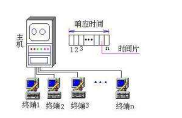
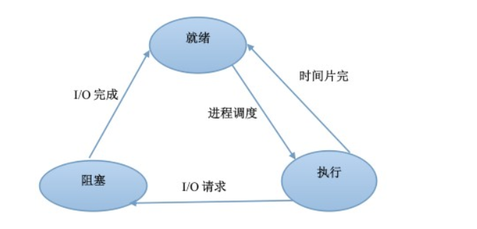
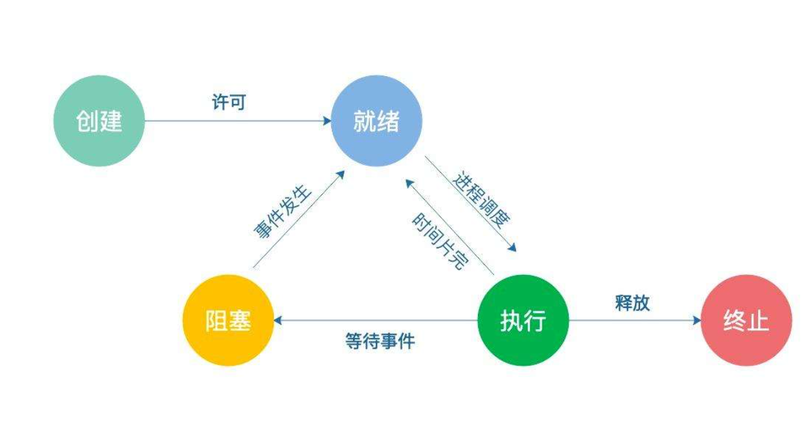
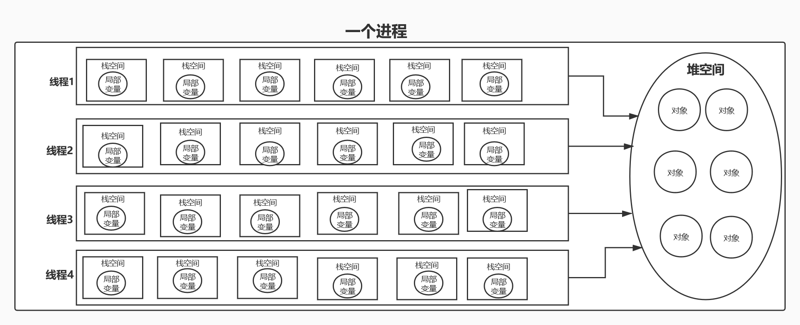
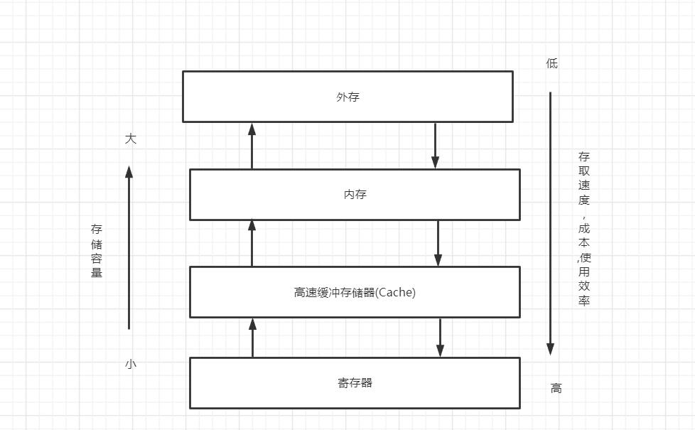

操作系统原理
操作系统原理
引论
计算机系统由硬件和软件系统两大部门组成,硬件系统是计算机赖以工作的实体,软件系统泽保证了计算机系统的硬件部分按用户指的要求协调地工作
硬件系统: 由 cpu , 内存储器, 外存储器, 输入输出设备 组成, 只有硬件的计算机称为裸机
软件系统分为 : 应用软件, 系统软件
定义: 操作系统是介于计算机硬件和应用软件之间的一个软件系统
操作系统的设计目标
- 方便性
- 有效性
- 可扩展性
- 开放性
- 可靠性
- 可移植性
操作系统的主要功能
- 处理器管理
- 存储管理
- 设备管理
- 文件管理
- 用户接口
- 网络与通信管理
操作系统的基本特征
并发性(最重要的特征)
并发性是指两个或两个以上的事情或活动在同一时间间隔内发生，（注意，并不是同一个时刻），也就是说在计算机系统中同时存在多个进程，从宏观上看，这些进程是同时并行向前推进的，从微观上讲，任何时刻下只有一个进程执行，如果在单CPU条件下，那么这些进程就是再CPU上交替执行的
操作系统的并发性能够有效改善系统资源的利用率，提高系统的效率，例如：一个进程等待I/O时，就让出CPU，并由系统调度并一个进程占用CPU运行，这样再一个进程等待I/O时候,CPU不会空闲，这就是并发技术
注意,并发性与并行性是两个概念，并发是指两个或以上程序在同一个时间段内同时执行，即宏观上并行，微观上串行，而并行则是指同时执行（同一个时刻都执行）
互斥使用方式（同步）：
指当一个进程正在使用某种资源时，其他欲使用该资源的进程必须等待，仅当这个进程使用完该资源并释放后，才允许另一个进程使用这个资源。如打印机，磁带机等都是只允许互斥使用
同时使用方式（异步）：
系统中有些资源允许在同一段时间内被多个进程同时使用，这里的“同时”的宏观意义上，典型的可供多个进程同时使用的资源是磁盘，可重进程序（可以供多个用户同时运行的程序），如编译程序
共享性（重要特征）
在内存中并发执行的多个进程可以同时使用系统的资源，资源共享的方式可以分为以下两种。
虚拟性
不确定性
操作系统的逻辑结构
- 单内核结构
- 分层结构
- 微内核结构
操作系统的运行模型
- 独立运行的内核模型
- 嵌入到用户进程中执行的模型
- 作为独立进程运行的模型
操作系统的发展史
- 手工操作阶段
- 监控程序阶段(早期批处理阶段)
- 多道批处理操作系统
- 分时操作系统
主要的操作系统类型
批处理操作系统
特征:一批作业自动按提交顺序依次装入内层执行,每次只允许一个作业进入内存工作,先提交的作业总是先完成
分时操作系统

- 分时操作系统为用户提交互命令
- 分时操作系统采用分时方法，为多个终端用户服务
- 分时的方法是将CPU的执行时间划分成若干个时间片
- 分时操作系统以时间片为单位轮流为各个终端用户服务
时间片
分时操作系统将CPU的执行时间划分为若干个片段，这些片段称为时间片。
响应时间是衡量分时操作系统性能的重要指标，时间片的时间长短可以通过控制终端的数量来调整
分时操作系统的特征
- 独立性
- 同时性（多路性）
- 交互性
- 及时性
分时操作系统与批操作系统的区别
- 追求的目标不同，批处理操作系统以提高资源利用率与系统吞吐量为主要目标，分时操作系统则以满足用户的人工交互需求以及方便用户使用计算机为主要目标
- 适应作业不同，批处理系统适用于非交互型的大型作业，而分时操作系统，则适用于交互型的小型作业
- 作业的控制方式不同，批处理操作系统由用户利用 作业控制语言 书写作业控制说明书并预先提交给系统，处理过程属于脱机工作，分时操作系统是交互型系统，由用户键盘输入操作命令来控制作业，处理过程属于联机工作
- 资源的利用率不同，批处理系统可合理安排不同负载的作业，使各种资源均衡使用，利用率较高，在分时操作系统中，当多个终端作业使用同类型编译程序和公共子程序（都属于可重载入代码）时，系统调用他的开销较小
实时操作系统
典型代表： 火车或飞机订票系统，银行业务处理系统
实时操作系统的主要功能
- 实时时钟管理
- 过载保护
- 高可靠性和安全性
实时操作系统的特征
- 及时响应和处理
- 安全可靠
- 交互能力有限
- 多路性
分时操作系统与实时操作系统的区别
- 设计目标不同，分时操作系统为多用户提供一个通用的交互方式，实时操作系统则是为特殊用途提供的专用系统
- 交互性强弱不同，分时操作系统交互性强，实时操作系统交互性弱
- 响应时间要求不同，分时操作系统以用户能接受的响应时间为标准，实时操作系统则与受控对象以及应用场合无关，响应时间变化范围很大
微机操作系统
也称个人计算机（PC）,一般是指的安装在个人计算机上的图形化界面操作系统，有以下4个特点：
- 微机操作系统基本上是根据用户使用键盘和鼠标发出的命令进行工作的，对人的动作和反应在时序上的要求并不是很严格
- 从应用环境来看，微机操作系统面向复杂多变的各类应用
- 从开发界面来看，微机操作系统为开发人员提供一个“黑箱”，让开发人员通过一系列标准的系统调用来使用操作系统的功能
- 微机操作系统相对于嵌入式操作系统来说，显得比较庞大，复杂。
微机操作系统分类
单用户单任务操作系统
单用户多任务操作系统
多用户多任务操作系统
微机操作系统的特征
- 开放性，支持不同系统互联，支持分布式处理和支持多CPU系统
- 通用性，支持应用程序的独立性与不同平台的可移植性。
- 高性能，随着硬件性能的提升，64位机的逐步普及以及CPU速度的进一步提高。微机操作系统引进了以前中大型机上才能实现的技术，支持虚拟存储器，多线程对称处理器SMP,促使计算机系统性能大大提高
- 采用微内核结构，提供基本支撑功能的内核极小，大部分操作系统功能由内核之外的运行的服务器（服务程序）来实现
网络操作系统
三大主流： Unix,Linux，windows
网络操作系统的工作模式
- C/S模式（客户机-服务器）
- 对等模式，每个站点既可作为服务器，又可以作为客户机
网络操作系统的功能
- 网络通信
- 资源管理
- 网络管理
- 互操作能力
多CPU操作系统
引入的原因：
1.增加系统的吞吐量， 2.节省投资 3.提高系统的可靠性
多CPU操作系统的类型
1.主从式 2.独立监督式 3.浮动监督式
分布式操作系统
定义：通过网络将多个分散的处理单元链接起来，并在分布式处理软件的支持下，构成一个整体而形成的系统
嵌入式操作系统
处理器管理
进程
进程的定义:
进程是一个可并发执行的 , 具有独立功能的程序 , 关于某个数据集合的一次执行过程, 也是操作系统进行资源分配和调度的基本单位
进程的结构:
进程实体 = 程序段 + 相关数据段 + PCB (Process Control Block)
进程的特征:
- **动态性:**进程的实质是程序的一次执行,因此进程是动态的,既然是一次执行,就表明进程有生命周期,具有 “创建 - 运行 - 消亡”的过程
- 并发性: 多个进程实体在一段时间内能够并发执行.引入进程的目的也正是为了使内存中多的多个程序能够在执行时间上重叠,以提高系统资源的利用率.
- 独立性: 每个进程都是一个独立运行的基本单位,也是系统进行资源分配和调度的基本单位
- 异步性:各进程按各自独立的,不可预知的速度向前推进,对单CPU系统而言,任何时刻只能有一个进程占用CPU, 进程获得了所需要的资源即可执行, 得不到所需要的资源则暂停执行.因此, 进程具有 “执行 - 暂停 - 执行” 这种间断性活动规律
- 结构性: 为了描述和记录进程运行的变化过程, 满足进程独立运行的要求以及能够反映 , 控制并发进程的活动, 系统为了每个进程配置了一个进程控制块PCB , 因此, 从结构上看, 每个进程都由程序段, 数据段, 以及PCB 这三部分组成
进程与程序的区别
程序就像是一个乐谱, 任何时候你都可以翻阅他, 但乐谱本身就是静态的,进程则可以看作依照乐谱的一次演奏 , 这个演奏有开始有结束(具有生命期) , 并随着时间的流逝,演奏的音乐不复存在, 也就是说 , 这个演奏过程本身是动态的, 即重新演奏这个乐谱也绝不是刚刚逝去的那段音乐(不是刚刚执行的进程,而是开始一个新的进程)
主要区别体现在如下:
- 程序是指令的有序集合,是一个静态的概念, 其本身没用任何运行的含义; 进程是程序在CPU上的一次执行过程, 是一个动态的概念
- 程序作为软件资源可以长期保存 ; 而进程则有生命周期 , 它因创建而诞生 , 因调度而执行, 因得不到资源而暂停执行, 因撤销而消亡
- 程序作为静态文件既不运行, 也不分配和调度 ; 进程是一个独立运行的基本单位, 也是系统进行资源分配和调度的基本单位
- 程序是记录在介质(如磁盘)上指令的有序集合, 而进程则是由程序段, 数据段, 和PCB这三部分组成
进程状态
两状态模型 : 运行(Running) 或 非运行(Not-running)
三种状态模型:

五种状态模型:

进程控制块(PBC)
定义: 一种能够描述和控制进程运行的数据结构, PBC 操作系统中最重要的数据结构之一
PBC中的信息:
进程标识符 ,进程当前的状态 , 进程中的程序段和数据段的地址 , 进程资源清单 , 进程优先级 , 进程同步与通信机制 , PCB队列指针或链接字 , 与进程相关的其他信息
PCB的组织方式:
线性表方式 ,链接表方式 , 索引表方式
进程控制
进程切换的实质是回收当前运行进程对CPU的控制权 , 并将CPU控制权转交给新调度的就绪进程
进程上下文:
进程切换时机:
引起进程切换的中断分为三种:
- **中断:**中断发生时,操作系统保存当前运行进程的现场信息,调度新进程运行
- **异常:**当CPU在一条指令执行时,检查到有一个或多个预定义的条件或错误产生时就会产生异常,这时,终止当前运行进程的执行,CPU转去执行异常处理程序
- **系统调用:**系统调用是对操作系统服务的显示请求.阻塞型系统调用发生时,则当前运行进程被阻塞,此时CPU转去执行进程调度程序
进程上下文:
指操作系统用来管理和控制进程的内部数据集合,进程在其上下文中运行.可分为三部分
- 系统级上下文.
- 寄存器上下文
- 用户级上下文
进程上下文切换:
进程切换发生时,当前运行进程让出其占用的CPU,由操作系统保存当前运行进程(旧进程)的上下文,并设置被进程调度程序选中的就绪进程(新进程)的上下文环境. 进程切换主要包括6个步骤:
- 当前运行进程(旧进程)被中断时,保存其CPU现场信息
- 对被中断的当前运行进程进行PCB更新,包括改变进程状态和其他相关信息.
- 将被中断的当前的运行进程的PCB移入适当的队列(因时间片到期则移入进程就绪队列,因某事件发生则移入相应的进程阻塞队列)
- 由进程调度程序选中一个就绪进程(新进程) , 为其设置执行的上下文环境并对其PCB进行更新
- 修改被选中新进程的地址空间,更新进进程的内存管理信息
- 恢复被选中的新进程最后一次进程上下文切换时所保存的CPU现场.
进程控制原语
定义: 具有原子性的一段特殊程序,这段程序,要么全部的指令都执行,要么都不执行,在执行这段程序的指令期间不允许转去执行其他程序
处理器调度
作业与进程的关系
作业是用提交给操作系统完成的一个独立任务,是要求计算机所做工作的集合
区别如下:
- 作业是用户向计算机提交任务的任务实体,在用户向计算机提交作业后,该作业放入外存中的后备作业队列等待作业调度,而进程是完成用户任务的执行实体,是向系统申请分配资源的基本单位,任何一个进程,只要被创建,总是有相应部分存在于内存中
- 一个作业可以由多个作业组成,即同时对应多个进程,并且至少由一个进程组成
- 作业的概念主要用在批处理系统中,如UNIX这样的分时系统就没有作业的概念.而进程的概念几乎用在所有多道程序系统中
- 作业调度主要是检查系统是否满足作业的资源要求,以及按照一定的算法来把外存后备作业队列中的作业调入内存,为其创建进程插入就绪队列中 ; 进程调度则是根据一定的算法把CPU分配给进程就绪队列中的某个进程让其执行
批处理系统中作业与进程的关系
批处理作业从与预输入到缓输出需要经历的四种状态:
- 提交状态
- 后备状态
- 执行状态
- 完成状态
分时系统中作业与进程的关系
CPU的三级调度
三级调度层次可分为三级: 高级调度(作业调度) , 中级调度(交换调度) , 低级调度(进程调度)
高级调度
主要功能包括:
- 选择作业
- 分配资源
- 创建进程
- 作业控制
- 回收资源
中级调度
主要功能: 在内存资源中紧张的情况下,从内存中暂存不运行的进程中选择一个或数个进程挂起
主要目的: 为了对系统负荷(内存资源)起到短期平滑和调度的作用,以便提高内存利用率和系统吞吐量
低级调度
主要功能:按照一定的调度算法将CPU分派给进程就绪队列中的某个进程
处理器调度队列模型 (待补充)
进程调度
调度方式:
- 非抢占式调度:选中一个进程后会让这个进程一直执行下去,知道运行结束或者该进程发生等待事件而阻塞时才将CPU返还给调度程序
**特点:**实现简单,系统开销小,但出现紧急事件时不能立即处理,不适用于实时系统和分时系统
- 抢占式调度: 抢占原则有:
- 高级优先原则:
- 时间片原则:
调度时机:
引起进程调度的原因主要有以下4个
- 创建一个新进程后
- 运行进程终止
- 运行进程阻塞
- 运行的进程时间片到期
- 进程优先级发生改变
不允许进程调度和切换的情况:
- 中断处理过程中,由于中断处理不属于某一进程,因此不应该作为进程的程序段而被剥夺CPU
- 进程在操作系统内核的临界区: 为实现临界区的互斥访问,通常以加锁的方式防止进程进入该临界区.在用户进程访问临界资源期间不允许切换到其他进程去执行
- 在需要完全屏蔽中断的原子操作执行过程中
调度实现:
出现进程调度后,主要完成的任务是进程切换.
- 保存当前运行的现场信息.
- 选择即将运行的进程
- 为新选中的进程恢复线程
单处理器调度
调度原则:
面向系统准则:
主要有以下4个方面准则
- 吞吐量
- CPU利用率 (cpu利用率 = cpu有效工作时间 / cpu总的运行时间) , cpu总运行时间 = cpu有效时间 + cpu空闲等待时间
- 系统资源平衡利用
- 公平性
面向用户准则:
主要应该遵循以下4个方面准则(对进程也适用):
- 周转时间 作业周转时间 Ti = 作业 i 完成时间 - 作业 i 提交时间 , 或者 Ti = 作业 i 运行时间 + 作业 i 等待时间
- 响应时间
- 截止时间
- 优先权准则
常用调度算法
1. 先来先服务调度算法(FCFS)
先来服务调度算法是一种非抢占式调度算法, 当某进程/线程占用了cpu后就一直运行,一直到该进程/线程运行结束才放弃cpu,或在运行中因发生某等待事件被阻塞而放弃cpu
2.短作业/短进程优先调度算法(SJF/SPF)
此算法是一种非抢占式调度算法, 某作业的进程一旦获得了cpu,就一直运行到进程完成或因某件事阻塞而放弃cpu,所以短作业/短进程优先调度算法不适合分时系统或者实时系统
3.时间片轮转调度算法(RR)
此算法实际上是一种基于时钟的抢占式调度算法, 核心是时间片. 主要用于低级调度.
进程就绪队列总是按进程到达系统的时间先后次序进行排队, 进程调度程序按先来先服务的原则,选择就绪队列中第一个进程,将cpu分配给他执行. 进程每次使用cpu的时间只能是一个时间片,当运行进程用完规定的时间片时必须放弃cpu使用权.这时, 线程调程序会将cpu分配给当前就绪队列的第一个进程, 而放弃cpu的进程则回到就绪队尾
4.高响应比优先调度算法(HRRF)
此算法是一种基于动态优先数的非抢占式算法 , 可用于作业调度,进程/线程调度
每个进程都有一个动态优先数, 该优先数不仅是进程运行时间(估计值)的函数,还是其等待时间的函数 ,一般将响应优先数定义为 Rp
Rp = 响应时间 / 运行时间 = 运行时间+等待时间/运行时间 = 1+ (等待时间/运行时间) , 选择相应比高的进程优先运行 ,.
5.优先级调度算法
适用于 高级调度, 低级调度, 还用于实时系统
- 静态优先级: 作业或进程在进入创建时被赋予一个优先级,该优先级一旦确定则在其整个生命期内不再改变 .
- 动态优先级: 在调度对象刚进入系统时 , 也需要依据某种原则为其赋予一个优先级 , 但随着时间的推动, 不同调度对象的优先级在不断的进行动态调整,
**在采用优先级的低级调度种,**又分为抢占式和非抢占式两种调度方式
- 抢占式式优先级调度:
- 非抢占式优先级调度:
6.多级反馈队列调度算法(MLFQ)
- 设置多个进程就绪队列,每个进程就绪队列一个优先级,每个队列执行的时间长度也不同, 原则是优先级越低时间片越长
- 新进程(就绪状态)进入内存后,先放入进程就绪队列Q1的队尾 , 运行按时间片轮转调度算法(RR)调度
- 仅当前面比较高优先级的队列均为空时 , 才能调度后面比较低优先级队列种的进程运行, 如果进程运行中 , 进程运行中有新进程进入更高优先级的队列, 则新进程讲抢占cpu ,被抢占CPU的进程则回到原队列的队尾.
优缺点 :
优点 :短进程能够得到优先处理 ; 系统开销不大 ; 同时支持分时 , 实时 , 批处理的通用操作系统
缺点: 如果优先级比较高的队列一直不为空, 则优先级比较低队列中的进程可能长时间得不到运行
实时调度:
实时调度与非实时调度的区别表现在以下4个方面:
- 实时调度所调度的任务有完成时限 , 而非实时调度没有
- 实时调度要求有比较快的进程/线程切换时间, 而非实时调度的进程切换时间比较长
- 实时调度主要强调在规定时限范围内完成对相应对象的控制 , 非实时调度强调资源的利用率(批处理系统) 和用户共享(分时系统)
- 实时调度为抢占式调度 , 非实时调度很少采用抢占式调度
线程(Thread)
线程的概念
定义:
- 进程内的一个执行单元
- 进程内的一个可独立调度的实体
- 进程是进程中一个相对独立的控制流序列
- 线程是执行得得上下文
属性:
- 基本不拥有系统资源 , 只拥有为保证运行而不可少的资源 . 如仅有子一个线程控制块(PCB) , 程序计数器(PC) , 一组寄存器以及堆栈等
- 线程是独立调度和分派的基本单位 , 也是独立运行的基本单位
- 同一个进程中所有线程共享该进程所拥有的全部资源
- 线程并发执行程度高 ,不但同一个进程内部的多个进程可以并发执行 , 而且属于不同进程的多个进程也可以并发执行
- 与进程类似 , 线程也拥有生命周期, 也存在 执行 ,就绪 , 阻塞 这三种基本状态.

线程与传统进程的区别
- 两者都有标识符(ID) , 一组寄存器 , 状态 , 优先级以所要遵循的调度策略
- 进程有一个进程控制块(PCB) , 线程有有一个线程控制块(TBC)
- 进程中的线程共享该进程的资源 , 子进程也共享父进程的资源 .
线程与传统进程(传统进程不涉及线程的概念)主要存在以下5个差异:
- 传统进程除是调度和分派的基本单位外 , 还是资源分配的基本单位 , 而线程只是调度和分派的基本单位, 不是资源分配的基本单位
- 在引入线程的系统中, 不仅同一个进程中的多个线程可以并发执行,并且属于不同线程中的多个线程也可以并发执行 (也称进程并发执行) ,线程并发执行程度高于传统进程并发执行的程度
- 创建和撤销一个线程所花费的时间开销小于创建和销毁一个传统进程 , 线程间彼此切换所需时间远少于传统进程间切换所需要的时间
- 线程可以使用他所隶属于进程的资源(如:程序段 , 数据段, 打开的文件及I/O设备等) ,并且属于同一个进程的所有线程共享一个地址空间 , 不同进程的地址空间是独立的
- 同一个进程里的线程, 数据可以直接相互传递使用 , 进程之间的数据传递只能通过通信方式传递,通信方式相对费时且不方便
线程实现原理
内核态线程实现
用户态线程实现
混合式线程实现
进程同步与通信
并发进程的关系
对于相关得并发进程 , 则存在以下两种相互制约的关系 .
- 间接制约关系:
- 直接制约关系:
进程的互斥与同步
进程同步: 指某些进程之间在逻辑上的相互制约关系 . 也就是说,若干个进程为完成一个共同的任务而相互合作,由于合作的每个进程都是以各自独立的 , 不可预知的速度推进 , 这就需要互相合作的进程在某些协调点处来协调他们的工作 .当一个合作进程到达此协调点后 , 在未得到其他合作进程发来的消息之前则阻止阻塞自己 , 直到其他合作进程给出协调信号后, 才被唤醒再继续执行 .
进程互斥: 指某个资源同一时间只允许一个进程对其进程访问, 这种访问具有唯一性和排他性, 进程互斥通常是进程之间争夺互斥资源而引起的, 在这种情况下 , 任何时刻都不允许或以上的并发进程同时执行那段访问该互斥资源的程序代码
进程互斥还会产出两个额外的问题:
- 饥饿: 一个进程所申请的资源总是被优先于自己的其他进程所占有 ,而导致**该进程长期处于就绪或阻塞状态(**不能被调度执行)
- 死锁: 一个进程集合中已占有部分资源的两个或以上进程 , 还需要等待获得已被其他进程占有的资源才能够继续执行 , 有可能会出现某些进程相互之间都在等待对方占有的资源而无法运行的局面
互斥与同步的联系:
进程同步与进程互斥的相似之处是进程互斥实际上是进程同步的一种特殊情况, 即逐次使用互斥资源 , 这也是对进程使用资源次序的一种协调(同步) . 因此可以讲进程互斥和进程同步统称为进程同步.
进程同步与进程互斥的区别是进程互斥是由互斥资源引起 , 即各进程之间共享互斥资源的使用权 ; 进程同步是互相协作的并发进程之间存在必然联系 , 若当前运行进程执行过程中需要进行同步时, 在没有得到协同工作的其他合作进程发来的同步消息之前, 当前运行进程则不能继续向前推进(运行),在进程同步中, 虽然互斥资源依然制约着进程的执行, 但协调各进程向前推进的只能是通过进程同步来协调和制约各合作进程的执行 , 所以进程同步是在互斥的基础上(大多数情况),通过对资源的有序访问去完成一个共同的任务
临界资源与临界区
临界资源: 一段时间内只允许一个进程使用的资源.
临界区: 进程中访问临界资源的代码段
同步机制的4条准则:
- 空闲先让
- 忙则等待
- 有限等待
- 让权等待
实现进程互斥方法
硬件方法:
1.开关中断指令:
2.测试与设置指令
3.交换指令
软件方法:
1.两标志进程互斥算法:
2.三标志进程互斥算法:
信号量机制
**信号量:**在操作系统中, 信号量代表一类物理资源, 他是相应物理资源的抽象 , 具体实现时 , 信号量被定义成具有某种类型的变量, 通常为整型或者结构体类型 . 信号量除了初始化外 , 在其他情况下 其值只能由P和V两个原语操作才能改变
- 整型信号量;
- 结构体型信号量:
使用信号量实现进程互斥(待补充)
使用信号量实现进程同步(待补充)
经典互斥与同步问题与应用
问题:
生产者-消费者问题(待补充)
哲学家进餐问题(待补充)
读者-写者问题(待补充)
睡眠理发师问题(待补充)
应用
缓冲区数据传送问题(待补充)
吃水果问题(待补充)
管制机制
信号量机制虽然是一种有效的进程互斥与同步机制 , 但实现进程同步的P操作和V操作 可能分布在整个程序中 , 这不仅麻烦 , 操作不当还会导致死锁.
**管制:**是一种新的进程互斥同步与同步机制 , 她能提供与信号量同等的功能 ,使用管制机制可以将分散在各进程中的同步操作集中起来统一控制和管理 , 进程通过调用管制中的过程或函数可以更方便的实现进程的互斥与同步
条件变量与管制结构
1.条件变量
条件变量是管制的一种进程同步机制 , 他能让多个进程之间传递信号, 并解决管制内进程可能出现的忙等问题
条件变量是封住在管制内的一种数据结构 , 他对应一个进程阻塞队列 , 并只能被管制中的函数访问, 且是管制内的所有函数的全局变量.
2.管制结构
管制发明人之一给管制的定义是: 一个管制定义一个数据结构和在该数据结构上的一组函数, 这组函数能够同步进程和改变管制中的局部.管制具有5个性质:
- 管制中不仅有数据而且有对数据的操作,即管制是一种扩展了的抽象数据类型.
- 管制这种扩展了的抽象数据类似的描述对象是互斥资源 , 因此管制实际上是互斥资源的管制模块.
- 作为一个软件模块 , 管制应符合模块化的要求 , 即管制应是一个基本程序单位, 并可以被单独编译
- 管制中的数据结构只能被管制中的函数使用, 管制内的数据结构和函数具体实现在外部是不可见的
- 为了实现对互斥资源的共享 , 管制应有互斥与同步机制
管制主要由三部分组成:
- 局部于管制内的数据结构 ;
- 管制内共享数据的初始化语句:
- 一组对管制内数据结构进程进行访问的调用函数
管制被请求或释放互斥资源的进程所调用 , 使用管制实现进程同步具有一下三个特点:
- 管制内的数据结构只能由管制定义的函数访问 , 任何外部函数都不能访问它们 , 同样局部于管制的函数也只能访问管制内的数据结构.因此可以把管制看作一个围墙 , 它把公用变量和对公用变量操作的一组函数保护起来, 所有要访问管制内数据的进程都必须过管制才能进入临界区 , 而管制每次只允许一个进程进入, 从而实现了多个进程对临界区的互斥访
- 任何时刻只能有一个进程在管制中执行, 其他申请进入管制的进程必须阻塞等待.
- 一个外部函数只有通过调用管制内的一个函数才能进入管制
管制解决问题:
解决生产者-消费者问题
解决哲学家进餐问题
解决读者-写者问题
解决睡眠理发师问题
解决吃水果问题
进程通信
同步与通信是并发进程交互的两个基本要求 .进程同步主要解决临界区问题, 而进程通信主要指的进程之间的信息交换 .虽然信号量机制解决了进程的互斥与同步问题 , 但没有解决如何在进程之间传递大量信息的问题
通信的几种方式:
- 发送接收方先约定, 发送方利用磁盘等外存设备将要交换的数据写入指定的外存的指定区域 ,接收方通过该区域进行读取数据.这种方案实现简单,只需要操作文件系统即可 但通信过程需压迫IO操作
- 利用内核运行在内核态的特点,发送方通过内核程序将数据写入内核空间指定的区域 , 接收方则通过另一组内核程序 , 从指定的区域中读取数据,并将此数据写入接收方的内存数据空间中.这种方案需要操作系统专门的系统调用来实现 , 数据传输不需要IO操作(全部在内存中完成) ,因此速度快
根据进程之间交换信息量的大小 , 又可以将进程通信分为以下两种 :
- **低级通信:**进程之间一次只能传送很少的信息,前面已经介绍过的信号量方式 , 就是实现进程互斥和同步的低级通信.优点:速度快 ;缺点:传递的信息量少,效率低 ,过程对用户不透明.因此操作复杂
- **高级通信:**一次间可以传输大量信息.优点: 通信效率高,过程对用户透明 , 编程相对简单 . 高级通信的目的不仅是为了控制进程的执行速度 ,而且是为了交换大量信息 . 进程间的高级通信分为三种:
- **共享内存通信:**通信利用双方共享的内存区来实现进程的通信
- 消息传递通信:利用操作系统提供的信息传递系统来实现通信.由于这种方式是直接使用操作系统提供的通信命令(原语)来进行通信 , 从而隐藏了进程通信实现的细节 , 大大降低了编程的复杂性并得到了广泛应用.消息传递系统根据实现方式的不同,又可分为消息缓冲方式(直接通信)和信箱通信方式(间接通信)
- **共享文件通信:**通信双方利用共享一个文件来实现进程通信,这种方式又称为 管道通信 , 因此共享的文件又称为管道
死锁
首先普及几个概念:
- **可抢占资源:**某进程获得这类资源, 该资源可以再被系统或其他进程抢占 .(如CPU,正在执行的进程所使用的CPU可以被优先级更高的新就绪进程抢占 , 还有内存)
- **不可抢占资源:**某进程获得这类资源后 , 该资源不能再被其他进程所抢占,只能在进程使用完毕后由进程自己释放,否则可能导致进程所作的工作的出错或失败 (如前面提到的 临界资源 , 软件资源的信号,消息 ,设备缓冲区中存储的数据信息; 硬件资源的打印机, 磁带机)
互斥资源与不可抢占式的资源的联系与区别:
互斥资源是只能互斥使用, 不可抢占资源一定是互斥资源 (如打印机) , 但互斥资源不一定是不可抢占资源(如CPU) ,因此==不可抢占资源是互斥资源的子集==
产生死锁的原因:
- 系统资源不足 , 产生死锁的根本原因是可供多个进程共享的系统资源不足 ,当多个进程需求资源的总和大于系统能够提供的资源时 , 进程间就可能会因竞争不可抢占资源而导致死锁 ,并且死锁的发生总是在进程提出资源请求时
- 进程推进顺序不当 , 由于系统中各个进程都以各自独立地速度向前推进 , 因此就可能出现按这种顺序联合推进 , 使所有进程都能正常运行到结束 , 而按另一种联合推进 , 将会使两个或两个以上的进程出现这种情况 , 既占有部分资源又要申请其他阻塞进程所占有不可抢占资源的情况 , 从而导致这几个进程陷入死锁
产生死锁的必要条件:
- **互斥条件:**进程对所获得的资源进行排他性使用 , 任一时刻一个资源仅能被一个进程占用
- **请求和保持条件:**一个进程请求资源得不到满足而阻塞自己时 , 并不释放已分配给它的资源 , 该条件也称为部分分配条件
- 不可抢占(不剥夺)条件: 进程所获得的资源在未使用完毕之前 , 不能被其他进程抢占 ,而只能占用该资源的进程自己释放
- 循环等待条件: 若干进程(两个或两个以上)形成一个循环等待链 , 链中每个进程都在等待该链中下一个进程所占的资源
条件4成立其实隐含了前三个条件的成立 , 可通过破坏上述四个条件中的任意一个来预防死锁的产生
死锁的预防:
根据上述可知, 预防死锁的发生只需破坏四个条件之一即可 , 但破坏条件1显然不行 , 这是因为进行互斥访问是由不可抢占资源的固有特性决定的 , 因此预防死锁发生可设置限制条件 , 使请求和保持 ,不可抢占 , 循环等待这三个必要条件的某一个不成立即可
1.破坏请求和保持条件
每个进程在运行之前 , 一次性申请它所需要的全部资源 , 并在资源未得到满足之前 , 不投入运行 , 进程一旦投入 , 则分配给它的资源就一直归该进程所有 ,且不再提出新的资源请求
**优点:**安全简单,易于实现
缺点: 系统资源严重浪费 ; 由于进程只有获得全部资源后才能运行, 因此会导致一些进程长时间得不到运行 ; 很多进程在运行之前, 系统并不知道它到底需要多少资源
2.破坏不可抢占条件
进程在运过程中, 根据需要逐个提出资源请求, 当一个已经占有了某个资源的进程 , 且又提出新的资源请求而未得到满足时 ,则必须释放它已获得的全部资源 , 而进入阻塞状态 , 待以后需要时 , 再重新申请
**缺点:**1.有些资源被抢占后可能会引起错误(例如: 某进程使用打印机输出一些信息后, 因申请其他资源没有成功而被阻塞时放弃了打印机 , 该打印机被分配给其他进程使用输出信息 , 当该进程重新运行获得该打印机输出时 ,会造成前后两次的打印结果不连续) 2.该方法实现起来比较复杂且代价太大 , 进程的反复申请和释放资源会使进程推进缓慢 , 甚至可能导致进程的执行被无限推迟 , 这不但延长了系统的周转时间 , 也增加了系统的开销; 3.可能存在某些进程的资源总是被抢占而造成的 “饥饿”
3.破坏循环等待条件
将系统中所有资源进行编号 , 并按规定进程申请资源时必须严格按照资源编号递增(或者递减)的顺序进行 , 如将输入机 ,磁带机,打印机,磁盘分别进行编号:1,2,3,4 . 进行再获得某个资源后,下一次只能申请较高(或较低)编号的资源 , 不能再申请低(或高)编号的资源 .
**优点:**与上述前面两种策略比起来, 系统资源的利用率和吞吐量有明显改善
缺点: 1.进程实际使用资源顺序不一定与编号顺序一致 , 有可能会造成一定的资源浪费 2.资源不同的编号方法对资源利用率有重要影响, 且很难找到最优的编号方法 3. 资源编号必须相对稳定, 当系统添加新种类设备后 , 处理起来比较麻烦 ; 4.严格的资源分配顺序使用户编程的自主性受到限制
死锁的避免
1.系统的安全状态和不安全状态
2.使用银行家算法避免死锁
3.银行家算法
4.判断当前状态是否安全子算法
死锁检测与接触
1.死锁检测
2.死锁定理
3.,死锁检测算法
4.死锁解除
存储管理
计算机的存储器分为两类: 一类是内部存储器(内存,CPU可以直接访问), 另一类是外部存储器(外存,不可直接访问) , 内存又叫主存储器,是计算机的重要资源之一.存储管理指的是管理内存,是操作系统的重要组成部分
程序运行需要两个最重要的条件, 一个是程序和数据要占有足够的内存空间 ; 另一个是得到CPU , 因此除了CPU管理之外, 存储管理的优劣也将影响的性能.对于外部存储器来说,其管理虽然与内存管理类似,但外存主要用于存放文件
程序链接和装入
在多道程序环境中要使程序运行 ,首先必须为它创建进程 , 而创建进程就必须将程序和数据装入内存 ,能装入内存执行的程序执行的程序就属于可执行程序(例如:windowsz下的 .exe文件) .通常用户编写的源程序要经过一下步骤才能转变为可执行程序:
- 首先,由编译程序把源程序编译成若干个目标模块
- 然后,由链接程序把所有目标模块和它们需要的库函数链接在一起,形成一个完整的可装入模块
- 可装入模块可以通过装入内存成为可执行程序,当把CPU分配给它的时候就可以投入运行.
因此,要使源程序能够运行,必须经过 编译, 链接 ,装入 三个步骤
逻辑地址和物理地址
- **逻辑地址(相对地址):**用户源程序经编译,链接,后得到可装入程序, 由于无法预先知道程序装入内存的具体位置,因此不可能在程序中直接使用内存地址 , 只能暂定的起始地址为 0 ,这样, 程序中指令和数据的地址都是相对 0 这个起始地址进行计算的 , 一般情况下: 目标模块和装入模块中的地址都是逻辑地址
- 逻辑地址空间: 一个目标模块或装入模块的所有逻辑地址的集合, 被称为逻辑地址空间或者相对地址空间
- 物理地址: 内存中实际存储单元的地址称为物理地址 ,也叫绝对地址或者内存地址.为了使程序装入内存后能够正常运行 , 就必须将程序代码中的逻辑地址转换为物理地址 , 这个转换操作称为地址转换
- 物理地址空间: 内存中全部存储单元的物理地址集合称为物理地址空间, 绝对地址空间或空间地址空间. 由于每个内存单元都有唯一的内存地址编号 ,因此物理地址空间是一个一维的线性空间 , 要使装入的内存的程序能够正常运行,互不干扰,就必须将不同的程序装入到内存空间的不同区域
- 虚拟地址空间: CPU支持的地址范围一般远大于机器实际内存大小 , 对于多出来的那部分地址(没对应实际内存)程序依然可能使用 , 我们将程序能够使用的整个地址范围称为虚拟地址范围 ,如win xp 采用32位地址结构 , 每个用户进程的虚拟地址空间,每个用户进程的虚拟地址为4GB , 但可能实际内存只有2GB , 虚拟地址空间的某个地址称为虚拟地址 , 而用户进程的虚拟地址就是前面所说的逻辑地址
程序链接
源程序经过编译后所得到的目标模块 , 必须由链接程序将其链接成一个完整的可装入模块后, 才能装入内存运行.链接程序将几个目标模块装配成一个装入模块时 , 需要解决一下问题:
- 修改模块的相对地址 , 编译程序产生的各个目标模块中的地址都是相对地址 , 其其实地址都是 0 ,在将他们链成一个装入模块后, 由于各模块不能放入同一段逻辑地址空间, 故一些目标模块在装入模块中的其实地址不能再是0,因此要根据实际情况对模块中的相对地址进行修改
- 转换外部调用符号. 在将目标模块装配成可装入模块时 , 应将原目标模块中的外部符号转变为相对地址 .
对于目标模块的链接, 可以根据链接时间的不同分为一下三种不同的链接方式:
- 静态链接.程序运行前把源程序编译成的所有目标模块以及所需要的库函数链接成一个统一的装入模块.,以后不再分开
- 装入时动态链接.目标模块的链接是模块装入内存时进行的,即在模块转入过程中同时完成所有目标模块的链接
- 运行时动态链接.将一个目标模块装入内存后就启动运行该目标模块进程, 在进程运行过程中如果需要调用其他模块,则将需要调用的模块装入内存并链接到调用模块上, 然后进程继续运行
上述三种链接方式,使用较多的是运行时动态链接,这是因为它使某些模块的链接推迟到运行时,才进行,这样凡是程序执行过程中未用到的模块都不会装入内存.显然, 这种链接方式不仅可以节省内存空间,而且加快了程序目标模块的装入过程
程序装入
源程序经过编译,链接后,可形成可装入模块 ,将它装入内存后就可以投入运行.由于程序的逻辑地址空间和内存的物理地址空间并不一致.因此装入程序在将程序(可装入模块) 装入内存后, 在程序执行之前还必须将程序代码中的逻辑地址转换为真实的物理地址,即进行地址转换
程序装入
程序装入是指装入程序根据内存当前的实际使用情况 , 将程序装入到内存合适的物理位置 , 装入操作针对的是程序的整个逻辑地址空间,而对应的物理地址空间既可以是连续的,也可以是离散的.程序装入内存后并不能立即运行.(因为此时程序涉及到访问的地址是逻辑地址还未转换成物理地址)
根据装入时间的不同. 可以将程序装入分为运行前静态装入, 运行时动态装入两种;
静态重定位
静态重定位指的是装入程序将全部程序装入到内存适当的位置 , 在该程序装入内存时或运行之前 , 一次性将程序中凡涉及访存地址的指令其访存地址按下面的公式全部相对地址替换成物理地址,并在程序运行过程中不再改变
物理地址 = 相对地址 + 程序存放的内存起始的内存起始地址
若采用静态重定位, 通常不允许程序静态重定向后,重新移动该程序代码和数据再内存的存放位置 , 因为这种移动意味着刚才对程序进行的重定向必须重新来过. 这将会耗费大量CPU时间
**优点:**简单,容易实现
缺点: 内存利用率不高 , 必须由用户在程序设计时采用某种方法解决存储空间不足的问题 , 不利于用户共享存放在内存中的同一个程序.
动态重定位
动态重定位是指无论将程序一次性装入内存 , 还是在程序运行中动态装入个目标模块(或虚拟器存储器中动态装入程序的分页和分段)到内存 , 都不立即进行逻辑地址到物理地址的转换, 地址转换工作是在程序执行中进行的,即当执行的指令涉及到访存地址时再进行地址转换.
为了提高地址转换的速度 , 动态重定位要依靠硬件地址转换机构来完成, 硬件地址转换(重定位)机构需要一个或多个基地址寄存器(BR)和一个或多个逻辑地址寄存器(VR) .
物理地址 = BR + VR
其中,BR VR 分别表示基地址寄存器和程序逻辑地址寄存器中的内存
重定位的过程是: 装入程序将程序装入到内存中, 然后将程序所装入的内存区域首地址作为基地址送入BR中 ,在程序运行过程中, 当某条指令访问到一个相对地址时, 则将该相对地址送入VR中, 这时 , 硬件转换机构把BR 和VR中内容相加就形成了要访问的绝对地址
**优点: **有利于内存的管理和内存利用率的提高 , 构成了虚拟存储器的基础 ; 有利于程序段的共享
**缺点: **需要硬件支持 , 实现存储管理的软件算法比较复杂
存储器及存储管理的基本功能
为了程序能够在内存中正常运行,不受到内存中其他程序的干扰.所以内存管理要达到以下两个目标:
- 地址保护 , 一个程序不能访问另一个程序的内存地址空间
- 地址无关 , 用户并不关心程序中使用的是何种地址 , 此时程序是在内存还是在外存,这些工作应由内存管理自动完成
存储管理应具有以下4个基本功能:
- 内存空间的分配于回收 , 按程序要求进行内存分配,当程序运行结束后,适时回收其占用的内存
- 实现地址转换. 实现程序中的逻辑地址到内存物理地址的转换
- 内存空间的共享与保护.对内存中的程序和数据实施保护
- 内存空间的扩充.实现内存的逻辑扩充.提供给用户更大的存储空间,允许超过内存容量的程序运行
多级存储器体系
由于CPU中的寄存器也可以存储少量的信息 , 所以他也可以看作是存储体系中的一层.另外,现在的计算机系统一般都增加了高速缓存(Cache) .从寄存器到高速缓存,再到内存, 最后到外村,存取速度越来越慢 , 容量越来越大打, 成本和存取频度越来越低
**寄存器: **是CPU内部的高速存储单元 , 主要用于存放程序运行过程中所使用的各种数据 .寄存器的容量最小,但存取速度最高
高速缓冲存储器(Cache): 简称高速缓存.其存取速度与CPU速度相当, 非常快,但成本高且容量较小(一般为几kb到几百kb) ,主要用来存放使用频率较高的少量信息.
**内部存储器: **简称内存又叫主存储器, 程序只有装入内存后才能运行, 因此内存一般用来存放用户正在执行的程序和使用到的数据,CPU可以直接执行内存中的指令以及存取内存中的数据.内存的读取速度要比高速缓存慢一点, 容量要比高速缓存大得多(一般为几GB)
外部存储器: 简称外存,又称辅助存储器,外存不能被CPU直接访问, 一般用来存放大量的,暂时不用的数据信息.外存的存取速度比较低且成本也较低,但容量较大(一般为几GB)

内存空间的分配与回收以及地址转换
1.内存空间的分配与回收
为了合理,有效的使用内存,在设计内存分配与回收算法时, 必须考虑以下4个问题:
- 数据结构: 登陆内存的使用情况,记录可供分配的内存空闲区大小和起始地址,以供分配和回收时使用
- 放置策略: 决定内存中放置信息(程序或数据)的区域(或位置) , 即怎样在当前的内存空闲区中选择一个或几个空闲区来放置信息
- **调入策略: **确定外存中的进程段和数据段在什么时间 , 以什么样的控制方式进入内存
- 淘汰策略: 在需要讲某个程序段或数据段调入内存却出现内存没有足够空闲区时, 由淘汰来决定把内存中的哪些程序段和数据段由内存调出(淘汰)放入外存, 以便为调入的程序或数据段腾出足够的内存空间
2.地址转换(地址重定位)
程序运行时不能直接使用逻辑地址访问 , 内存中的信息, 而必须把程序地址空间中的逻辑地址转换成内存空间中的物理地址, 才能完成对内存信息的访问. 实现逻辑地址到物理地址转换有以下三种方式:
- 编译或者编译时产生绝对地址
- 静态地址转换
- 动态地址转换
内存的共享,保护,及扩充
1.内存空间的共享和保护
计算机中使用存储保护主要包括界地址保护, 存储键地址保护等方式
界地址保护
- 上下界和地址检查机构,这种机制主要用于静态地址转换.
- 基址,限长寄存器和动态地址转换机构.这种机制主要用于动态地址转换
存储键保护
2.内存空间扩充
实现内存扩充的根本方法是充分利用内存与外存资源,即只将当前需要使用的部分程序和数据放入内存, 不用的暂存于外存,当需要时再交换
控制程序和数据在内,外存之间交换的基本方式有以下两种:
- 用户自己控制方式
- 操作系统控制方式:
分区式存储管理
单一连续分区存储管理
1.实现原理
单一连续分区存储管理方式只适合于用户,单任务操作系统, 是一种最简单的存储管理方式.
2.分配与回收
分配过程是首先将装入内存的程序与用户区进行大小比较 , 若程序所需要内存空间没用超过用户区的大小,则为它分配内存空间;否则内存分配失败 , 若程序所需要内存空间没有超过用户区的大小 ,则为它分配内存空间 ; 否则内存分配失败.回收操作则是在用户区的程序运行结束后 , 将该区域标志置为未分配即可
3.地址转换与存储保护
单一连续分区存储管理的地址转换可以采用静态重定位和动态重定位
4,单一连续分区管理优缺点
**优点: **管理简单 , 开销小 安全性高, 除系统区外, 用户区种只有一个程序 , 不存在多个程序相互影响的问题 , 采用静态重定位方式不需要硬件支持
**缺点: **不支持多用户 , 程序的地址空间受用户区大小限制,这是因为程序在运行前必须一次性装入内存的连续区域, 若程序的地址空间比用户区大则无法装入; 由于一个程序独占系统资源 , 这样会造成系统资源严重浪费
固定分区存储管理
1.实现原理
固定分区存储管理是最早使用的一种可执行多道程序的存储管理方法 , 即将内存系统区之外的用户空间划分若干个固定大小的区域 , 每个区域称为一个分域并可装入一个用户程序运行.分区一旦划分完成,就在系统的整个运行期间保持不变.由于每个分区允许装入一道程序运行 ,这就意味着系统允许在内存中同时装入多道程序并发执行
2.分区划分
分区的数目和每个分区的大小一般由系统操作员或操作系统决定.一般采用以下两种方式
- 分区大小相等.
- 分区大小不等